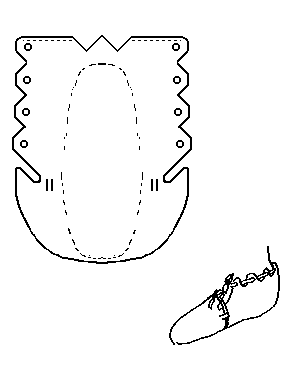

Frankish Carbatine (c.900)
This is a center *laced* shoe, apparently descended from the Roman shoe and boot styles.
The basic design is MY estimate of the pattern, and may not be absolutely accurate.
Return to
[Index]
Footwear of the Middle Ages - Historical Shoe Designs/Number 49, by I. Marc Carlson. Copyright 1996
This page is given for the free exchange of information, provided the Author's Name is included in all future revisions, and no money change hands, other than as expressed in the Copyright Page.